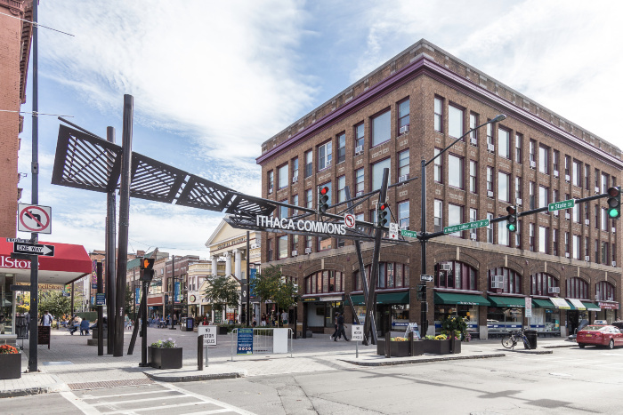
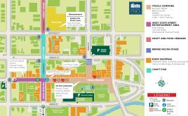
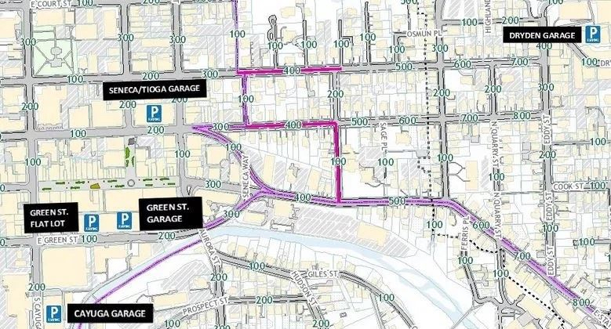

Ithaca Apple Harvest Festival
About
Apple Harvest Festival will host plenty of farmstand fresh apples and produce, delectable apple and seasonal baked goods, a variety of food trucks offering tasty bites, and a craft fair with artisans from around the region. There will also be live music and entertainment, plus a cider trail to enjoy refreshing cider in store and plenty of great apple and apples-inspired products for sale inside shops in and around Downtown.
Dates/Times
- Friday, September 30th 12pm-6pm
- Saturday, October 1st 10am-6pm
- Sunday, October 2nd 10am-6pm
Location
Located on the Ithaca Commons

Frequently Asked Questions
How much money should I bring?
Entry to the event is completely free! The amount of money you should bring is dependent on what, if anything, you wish to purchase at the festival. If you are driving, there is a $5 charge to park at the parking garage (You can find more parking information here ). If you plan to eat at the festival, you may also wish to bring at least $10. Prices of the various baked goods, produce, and crafts vary by vendor. Many of our vendors and their items can be found here.
Can I pay with a credit card?
Most of our vendors accept credit cards, however, you should bring some cash in case a shop you are interested in does not accept them.
When is the best time to attend?
If you are looking to avoid the crowds, attending midday Friday is a good idea. However, many attendees find that the crowds on the weekend add to the energy and fun of the festival.
Will there be alcohol?
Some vendors do sell alcohol (such as hard cider), so be sure to bring your ID if you are over 21. Many of these vendors also offer tastings.

Directions
Tompkins Consolidated Area Transit (TCAT) offers public bus transportation from all over the county. One-way fares are \$1.50 per adult. Cornell University students can ride without a fare on weekends and after 6pm with their student ID card. Learn more about fares at the TCAT website.
Residents and visitors can park in the Seneca, and Cayuga Street garages and walk to anywhere in Downtown Ithaca. Please note the Green Garage is closed for construction.
Garage parking is \$1.00 per hour in the garages. On-street parking is \$1.50 per hour during the week until 6pm.
For additional downtown parking, visit the City of Ithaca website.

TCAT Fall 2022 Schedules
Effective August 22, 2022 through January 22, 2023
Route 10: Mon-Fri Cornell – Commons Shuttle Also Serving: Sage Hall, Boldt Hall, Milstein Hall, Goldwin Smith Hall, Stewart Ave.
Route 11: Everyday Ithaca College – Commons Also Serving: College Circle Apts., Challenge, South Hill Business Park, South Hill Elementary, Longview
Route 13: Everyday Fall Creek Also Serving: Commons, DMV, Aldi, Ithaca High School, Lake St., Hancock St., Cayuga St., Stewart Park Weekdays Only: and Shops at Ithaca Mall
Route 13 Route 13S: Everyday Fall Creek Shopper Also Serving: Commons, Aldi, DMV, Hancock St., Cascadilla @ Fulton (near new Greestar Co+op location)
Route 13S Route 14: Everyday Hospital–West Hill – Commons Also Serving: W. State Street, West Village, Lehman School, Linderman Creek Apts., Overlook Apts., Conifer Village Apts.
Route 14 Route 14S: Everyday West Hill Shopper Also Serving: Overlook Apts., Cayuga Meadows, Linderman Creek Apts., Conifer Village Apts., West Village, Chestnut Hill Apartments, Wegman’s, Tops, Walmart, Trader Joe’s
Route 14S Route 15: Everyday Southside Shopper Also Serving: Commons, McGraw House, Titus Towers, Ithaca Plaza, Wegman’s, Tops, Walmart, Trader Joe’s
Route 17: Everyday Fall Creek – Commons Also Serving: TCAT Offices, W. Lincoln St., Cayuga St.
Route 20: Everyday Enfield – Commons Also Serving: Greenstar, Eco Village, Agway. Select trips serve Cornell West Campus. Saturday & Sunday: First trip is demand hiker drop-off at Bock Harvey Nature Preserve or the entrance to Upper Treman State Park. Route 67 picks up at the Lower Treman Stop (Elmira Rd @ Enfield Creek Bridge), allowing for a through hike.
Route 21: Everyday Trumansburg – Commons Also Serving: Ulysses, Jacksonville, GreenStar, Agway, Cornell, Commons
Route 30: Everyday Shops at Ithaca Mall – Cornell – Commons Also Serving: Cornell, Community Corners, Kendal, Tops (Lansing), YMCA Detour: Partial Detour in Collegetown
Route 31 / 41: Mon-Fri Etna – Cornell – Winston Court Also Serving: Winston Court, Community Corners, Etna Rd., Highland, The Parkway, Hanshaw Rd., Guthrie, Lower Creek Rd., Creekwood Apts., Hanshaw VIllage, Sapsucker Woods, Lab of Ornithology, See route 77 Tconnect for weekend service to Winston Court See route 32 for demand service to Convenient Care
Route 32: Everyday Airport – Cornell – Commons Also Serving: Cornell Business Park, Langmuir Lab, Northwood Apts., Gaslight Village, Uptown Village, University Park, Convenient Care, Community Corners, Statler Hall, Tompkins County Health Department No service to Collegetown
Route 36: Mon-Fri Lansing School Also Serving: Lansing H.S., Cornell, Commons, Ithaca H.S., Cayuga Mall, Shops at Ithaca Mall
Route 37: Mon-Fri Lansing Town Hall Also Serving: Lansing Town Hall, Village Solars, Warren @ Convenient Care, Cornell–Tower Road, Sage Hall, Commons. See route 77 Tconnect for weekend service to Warren Rd. and Village Solars
Route 40: Everyday Freeville – Groton Also Serving: Groton H.S., Varna, Etna, Dairy Bar, Sage Hall, Ithaca Commons See Route 43 for additional trips
Route 41: See route 31 /41 Route 43: Everyday Dryden – TC3 (Select trips serve Freeville and Groton) Also Serving: South Dryden, Dryden Village, Varna, Vet School, Sage Hall, Commons.
Route 51: Everyday Eastern Heights – Cornell – Commons Also Serving: Commonland, Honness Lane, East Hill Plaza, Tower Road, Sage Hall, Vet School. Maplewood Park Apts. (No service to Collegetown due to construction on College Ave.)
Route 52: Everyday Caroline – Commons Also Serving: Slaterville Springs, Brooktondale, Bethel Grove, Cornell, Vet School, Sage Hall.
Route 53: Mon-Fri Ellis Hollow – Varna Also Serving: The Commons, Cornell–Tower Road, Turkey Hill Rd., Ellis Hollow Rd. See route 52 for service to Brooktondale
Route 65: Mon-Fri + Saturday Danby Also Serving: Hillview Terrace Mobile Home Park, Danby Town Hall Park & Ride, Dotson Park, Ithaca Commons, Cornell–Tower Road
Route 67: Everyday Newfield Also Serving: Sunny’s, Meadowbrook, Valley Manor, Newfield Town Hall, Newfield Covered Bridge, Newfield Schools, Newfield Garden Apts, Treman State Park, Elmira Road, South Meadow, Clinton West Plaza, Ithaca Commons, Cornell–Tower Rd.
Route 81: Mon-Fri Cornell Campus Service Also Serving: A Lot, Balch Hall, Hasbrouck Apts., Helen Newman Hall, Cradit Farm Dr., Tower Rd., Vet School, BTI
Route 82: Mon-Fri Cornell Campus Service / East Hill Office Building Also Serving: East Hill Office Building, Ciser, East Hill Plaza, Maplewood Apts., East Ithaca Apts., Tower Rd., Sage Hall
Route 83: Mon-Fri Cornell Campus Service Also Serving: West Campus, Feeney Way, Sage Hall, Balch Hall, Highland Rd., Ridgewood Rd.
Route 90: Everyday Cornell Campus / Ithaca Commons Night Service Also Serving: Ithaca Commons, Collegetown, Statler Hall, North Campus, RPCC, Hasbrouck, Appel Commons, Sage Hall, Schwartz CPA
Route 92: Everyday Cornell Campus Service Also Serving: West Campus, Collegetown, Schwartz CPA, Cradit Farm Drive, Appel Commons, Helen Newman Hall, Hasbrouck Apts., North Campus